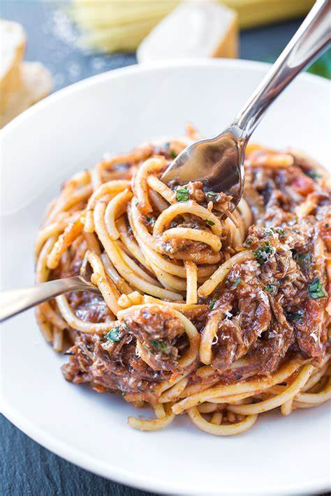

Spagehtti
A family favorite!
Ingredients
- 1.5 lbs of ground beef
- 1.5 teaspoon of salt
- .5 teaspoon black of pepper
- 1.5 cups of chopped onion
- 1 tablespoon of minced garlic
- 1 can of tomato sauce
- 1 tablespoon of italian seasoning
- 1 teaspoon of salt
- 16 ounces of spagehtti
Instructions
- Cook spaghetti in well-salted water according to package Instructions
- Heat a large pot over medium-high heat
- Add beef to the pot, sprinkle with salt and pepper, and crumble into small chunks with a wooden spoon and cook until lightly browned.
- Transfer beef to plate
- Drain all but roughly 2 tablespoons of the fat from the pan and set over medium-low heat
- Add the onion and garlic to the beef pot (which should be empty) and cook, until onion is translucent, about 7 minutes.
- Return beef to pot then stir in tomato sauce and Italian seasoning.
- Bring sauce to a boil, then immediately reduce heat and simmer, uncovered for 1 hour. Adjust seasoning as needed.
- Combinte spagehtti and beef sauce and serve with graded parmesan
Chef's Advice: If your short on time and can't simmer the sauce for an hour, no worries! Just make sure the suace is hot when served. Also if you want a vegan spagehtti replace the beef with chopped zucchini or just forgo it!